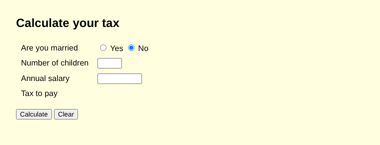

13. Servicios web
13.1. Introducción
En el capítulo anterior presentamos varias aplicaciones cliente-servidor TCP/IP. Como los clientes y el servidor intercambian líneas de texto, pueden escribirse en cualquier lenguaje. El cliente solo necesita conocer el protocolo de comunicación que espera el servidor.
Los servicios web también son aplicaciones de servidor (TCP/IP). Tienen las siguientes características:
- están alojados en servidores web, y el protocolo de intercambio cliente-servidor es HTTP (HyperText Transfer Protocol), un protocolo construido sobre TCP/IP, que exploramos en el capítulo anterior;
- el servicio web tiene un protocolo de comunicación estándar, independientemente del servicio prestado. Un servicio web ofrece diversos servicios: S1, S2…, Sn. Cada uno de estos servicios espera parámetros proporcionados por el cliente y devuelve un resultado al cliente. Para cada servicio, el cliente necesita saber:
- cómo especificar el servicio Si;
- la lista de parámetros que debe proporcionar y sus tipos;
- el tipo de resultado que devuelve el servicio. Una vez conocidos estos elementos, el diálogo cliente-servidor sigue el mismo formato, sea cual sea el servicio web consultado. Esto estandariza la comunicación del cliente;
- Para protegerse de los ataques desde Internet, muchas organizaciones abren solo algunos puertos de sus servidores al exterior: principalmente los puertos 80 (HTTP) y 443 (HTTPS) para el servicio web. Todos los demás puertos están bloqueados. En consecuencia, las aplicaciones cliente-servidor como las descritas en el capítulo anterior suelen estar restringidas a la red privada de la organización (intranet). Alojar un servicio en un servidor web lo hace accesible a toda la comunidad de Internet;
- el servicio web puede verse como un objeto remoto: los servicios que ofrece se convierten entonces en métodos de ese objeto. Un cliente puede usar este objeto remoto como si fuera local, a través de un objeto intermediario llamado proxy, que oculta toda la comunicación de red. Esto nos permite construir un cliente independiente de esta capa: si la capa cambia, no es necesario modificar el resto del cliente;
- Como en las aplicaciones cliente-servidor TCP/IP del capítulo anterior, el cliente y el servidor pueden escribirse en cualquier lenguaje de programación. Intercambian líneas de texto compuestas por dos partes: los encabezados requeridos por el protocolo HTTP y el cuerpo del mensaje, cuyo formato acuerdan el cliente y el servidor.
La arquitectura de una aplicación cliente-servidor basada en servicios web es la siguiente:

Se trata de una extensión de la arquitectura en capas del capítulo 6, a la que se añaden capas especializadas de comunicación de red: el cliente del servicio web del lado del cliente y el propio servicio web del lado del servidor. Ya encontramos una arquitectura similar con el servidor TCP de cálculo del impuesto (versión 8) del capítulo anterior.
13.1.1. Ayer: SOAP y WSDL
En 2008, este curso usaba los servicios web SOAP de .NET Framework: archivos [.asmx] creados con Visual Web Developer, cuyos métodos públicos se marcaban con el atributo [[WebMethod]]. El cliente enviaba una solicitud HTTP POST cuyo cuerpo era un documento XML en formato SOAP (Simple Object Access Protocol): un “sobre” que contenía el nombre del método y sus parámetros. El servidor respondía con otro sobre XML que contenía el resultado. Cada servicio estaba descrito por un documento XML en formato WSDL (Web Services Description Language), disponible en la URL del servicio seguida de [?WSDL]: enumeraba los métodos, sus parámetros y sus tipos. A partir de este documento, herramientas (el asistente “Add Web Reference” de Visual Studio, [wsimport] en Java) generaban automáticamente el proxy del servicio. Esta tecnología, y más tarde su sucesora WCF (Windows Communication Foundation), se usaron ampliamente en la década de 2000. Hoy están obsoletas: ni ASMX ni el componente de servidor de WCF existen en .NET (Core); solo existe un port de la comunidad, CoreWCF, para migrar aplicaciones heredadas. Las razones de este abandono son lo engorroso de XML y de los sobres SOAP, la complejidad de los estándares asociados (WS-Security, WS-Addressing, etc.) y la dificultad de llamar a estos servicios desde un navegador.
13.1.2. Hoy: REST y JSON
La mayoría de los servicios web actuales siguen el estilo REST (REpresentational State Transfer) e intercambian documentos JSON (JavaScript Object Notation, presentado en el capítulo 5). El estilo REST se basa en los siguientes principios:
- el servicio expone recursos, cada uno designado por una URL: [/tax], [/clients/12], [/clients/12/orders];
- se accede a estos recursos mediante los métodos (también llamados verbos) del protocolo HTTP, cada uno de los cuales tiene un significado específico;
- el resultado de la acción se indica mediante el código de estado HTTP de la respuesta;
- el cuerpo de las solicitudes y las respuestas es, la mayoría de las veces, un documento JSON, más compacto y más simple que XML;
- el servicio es sin estado: cada solicitud contiene toda la información necesaria para su procesamiento; el servidor no almacena ninguna información de una solicitud a la siguiente para un cliente determinado.
Los métodos HTTP más utilizados son los siguientes:
Método | Uso | Ejemplo |
GET | Leer un recurso; los parámetros, si los hay, van en la URL | GET /clients/12 |
POST | Crear un recurso o solicitar un procesamiento; los datos van en el cuerpo de la solicitud | POST /clients |
PUT | Reemplazar un recurso | PUT /clients/12 |
PATCH | Modificar una parte de un recurso | PATCH /clients/12 |
DELETE | Eliminar un recurso | DELETE /clients/12 |
Los códigos de estado, presentados en el capítulo anterior, adquieren aquí todo su sentido:
Código | Significado |
200 OK | La solicitud se realizó con éxito; el cuerpo de la respuesta contiene el resultado |
201 Created | El recurso fue creado; el encabezado [Location] proporciona su URL |
204 No Content | La solicitud se realizó con éxito; la respuesta no tiene cuerpo |
400 Bad Request | La solicitud no es válida (parámetro faltante o no válido, etc.) |
404 Not Found | El recurso solicitado no existe |
500 Internal Server Error | Se produjo un error inesperado en el servidor |
Un servicio REST no tiene un equivalente obligatorio de WSDL. Sin embargo, es una práctica habitual describirlo mediante un documento OpenAPI (antes Swagger), en formato JSON o YAML, a partir del cual las herramientas pueden generar documentación, páginas de prueba y clientes. Volveremos sobre esto más adelante.
Por último, mencionemos gRPC, diseñado por Google: los métodos del servicio y sus mensajes se describen en un archivo [.proto], a partir del cual las herramientas generan el servidor y el cliente, tal como se hacía en la época de WSDL; los mensajes se codifican en un formato binario compacto (Protocol Buffers) y se transmiten mediante HTTP/2. gRPC es muy eficiente y popular para la comunicación entre servicios de una misma organización, pero no es adecuado para los navegadores. Está disponible para .NET con el paquete [Grpc.AspNetCore], que no usaremos.
13.1.3. ASP.NET Core y la Minimal API
Para desarrollar nuestros servicios web usaremos ASP.NET Core, el framework de desarrollo web de .NET, y más concretamente su Minimal API (.NET 6, 2021): en este framework, una URL y un método HTTP se asocian directamente con una función de C#, casi siempre una lambda. El servidor web es Kestrel, un servidor HTTP escrito en C# e integrado en la aplicación: no es necesario instalar un servidor web aparte, como ocurría con IIS (Internet Information Services) en 2008. ASP.NET Core forma parte del framework compartido [Microsoft.AspNetCore.App], que se instala con el SDK de .NET: no requiere ningún paquete NuGet.
Visual Web Developer, la herramienta gratuita de Microsoft usada en 2008 para escribir servicios web, ya no existe: bastan los comandos [dotnet] y sirve cualquier editor de código (Visual Studio Code, Visual Studio, Rider).
13.2. Un primer servicio web
Vamos a construir una aplicación cliente-servidor sencilla con la siguiente arquitectura simplificada:

Los proyectos de este capítulo se agrupan en una solución llamada [13-web-services.slnx], creada con los siguientes comandos, ejecutados en la carpeta [13-web-services]:
Los proyectos ya están incluidos en el material del curso: la carpeta [13-web-services] del archivo ZIP contiene la solución y los seis proyectos, completos y modificados como se describe en este capítulo. Por lo tanto, el lector no necesita ejecutar los comandos anteriores (de todos modos fallarían, porque las carpetas ya existen): muestran cómo se crearon estos proyectos y cómo crear los propios. Para ejecutar un proyecto proporcionado, basta con ir a su carpeta y escribir [dotnet run] (o abrir [13-web-services.slnx] en Visual Studio o VS Code). Lo mismo se aplica más adelante a los comandos [dotnet add ... reference] y [dotnet add ... package]: las referencias y los paquetes ya están incluidos en los archivos [.csproj] proporcionados.
La plantilla [web] de [dotnet new] crea un proyecto vacío de aplicación ASP.NET Core. Los tres servicios web de este capítulo ([WsHello], [WsOperations], [WsTax]) se crean con esta plantilla, y sus clientes con la plantilla estándar [console]. Esto da como resultado la siguiente estructura de directorios (solo se enumeran los archivos principales):
13.2.1. El lado del servidor

El archivo de proyecto [WsHello.csproj] generado por [dotnet new web] es el siguiente:
Comentarios:
- línea 1: la única diferencia con un proyecto de consola es el SDK utilizado: [Microsoft.NET.Sdk.Web] en lugar de [Microsoft.NET.Sdk]. El SDK web hace referencia al framework compartido de ASP.NET Core y agrega los espacios de nombres de ASP.NET Core a los espacios de nombres [using] implícitos ([Microsoft.AspNetCore.Builder], [Microsoft.AspNetCore.Http], [Microsoft.Extensions.DependencyInjection], [Microsoft.Extensions.Logging]…);
- no hay ninguna línea para [OutputType]: una aplicación web siempre es un ejecutable.
El programa generado [Program.cs] se reduce a cuatro instrucciones:
- línea 1: [WebApplication.CreateBuilder] prepara la aplicación web para su construcción: lee la configuración (archivos [appsettings.json], variables de entorno, argumentos de la línea de comandos), configura el registro y configura el contenedor de inyección de dependencias que usamos en el capítulo 6. [builder] permite completar esta preparación, por ejemplo, registrando servicios en el contenedor;
- línea 2: se construye la aplicación;
- línea 4: el método HTTP [GET] y la URL [/] (la raíz del sitio) se asocian con una lambda. Cuando el servidor recibe la solicitud [GET /], ejecutará la lambda y enviará el resultado (en este caso, el texto [Hello World!]) al cliente;
- línea 6: se inicia el servidor Kestrel; espera solicitudes hasta que se detiene la aplicación (Ctrl-C).
La plantilla también crea tres archivos de configuración:
- [appsettings.json]: la configuración de la aplicación;
- [appsettings.Development.json]: valores que reemplazan a los de [appsettings.json] cuando la aplicación se ejecuta en el entorno "Development";
- [Properties/launchSettings.json]: los "perfiles de inicio" usados por [dotnet run] y por Visual Studio. Establecen el puerto de escucha, que [dotnet new] selecciona al azar (5273, por ejemplo), y la variable de entorno [ASPNETCORE_ENVIRONMENT=Development].
El entorno de ejecución (Development, Staging, Production) cambia el comportamiento de la aplicación. En particular, en el entorno Development, una excepción no controlada produce una respuesta que contiene todos los detalles de la excepción, incluida la pila de llamadas: esto es útil para el desarrollador, pero sería una vulnerabilidad de seguridad en producción. Para que nuestros resultados coincidan con lo que vería un usuario, hemos eliminado [launchSettings.json] y [appsettings.Development.json] (por lo tanto, no aparecen en los proyectos entregados): nuestros servicios se ejecutan en el entorno predeterminado, Production. El puerto de escucha se establece entonces en [appsettings.json]:
- líneas 2–5: registro: se muestran los mensajes de nivel [Information] y superior, excepto los del propio ASP.NET Core (categoría [Microsoft.AspNetCore.*]), que se limitan a las advertencias ([Warning]) y los errores;
- línea 8: los nombres de máquina aceptados en el encabezado HTTP [Host] de las solicitudes; [*] los acepta todos;
- línea 9: agregamos esta línea: el servidor escucha en el puerto 5100 de la máquina [localhost]. La dirección también podría pasarse como argumento: [dotnet run --urls http://localhost:5100], o mediante la variable de entorno [ASPNETCORE_URLS].
El servicio web [WsHello] es una continuación del servicio de 2008, cuyo único método, [SayHelloToTheLady], devolvía la cadena [Hello Mrs xx]. Su código, [Program.cs], es el siguiente:
Comentarios:
- línea 6: la página raíz del sitio muestra un texto que explica cómo usar el servicio;
- línea 11: la plantilla de URL (conocida como la ruta) [/hello/{name}] contiene un parámetro de ruta [{name}]: corresponde a cualquier segmento de URL colocado después de [/hello/]. Así, la URL [/hello/Carla%20Bruni] asigna el valor [Carla Bruni] a [{name}] (el código [%20] representa un espacio en una URL). ASP.NET Core pasa automáticamente este valor al parámetro del mismo nombre en la lambda: esto es el enlace de parámetros (parameter binding). El método web de 2008 se ha convertido en una URL. La lambda devuelve una cadena: se envía tal cual al cliente como un documento de texto (tipo [text/plain]);
- línea 14: lo mismo, pero la lambda devuelve un objeto de tipo [Greeting]. ASP.NET Core lo serializa a JSON mediante [System.Text.Json] (capítulo 5) y lo envía al cliente como un documento de tipo [application/json]. Este es el formato estándar de la respuesta de un servicio web REST;
- línea 17: el servidor espera solicitudes;
- línea 20: el tipo del resultado, un [record] (capítulo 4). En un lenguaje de programación de alto nivel, las declaraciones de tipos van después de las instrucciones.
El servicio se inicia con el comando [dotnet run], ejecutado en la carpeta del proyecto. Muestra su registro:
- línea 3: el servidor está escuchando en el puerto 5100;
- línea 5: la aplicación está lista. Se puede detener con Ctrl-C;
- línea 7: el entorno de ejecución es Production;
- línea 9: la carpeta raíz del contenido de la aplicación, donde se buscan [appsettings.json] y la carpeta [wwwroot] que contiene los archivos estáticos. Con [dotnet run], es la carpeta del proyecto (el curso reemplazó el comienzo de la ruta por [...]);
- línea 11: este mensaje apareció cuando se detuvo el servidor con Ctrl-C, después de las pruebas descritas en los párrafos siguientes.
Cada mensaje del registro indica su nivel ([info], [warn], [fail], [crit]…) y su categoría (en este caso, [Microsoft.Hosting.Lifetime]) seguida de un número de evento entre corchetes.
13.2.2. Consulta del servicio con curl
Mientras el servicio está en ejecución, consultémoslo en una segunda ventana de comandos con la herramienta [curl] presentada en el capítulo anterior. La opción [-i] muestra los encabezados de la respuesta antes del cuerpo, y la opción [-s] (silent) suprime la barra de progreso:
- línea 2: la solicitud se realizó con éxito;
- línea 3: el documento es texto (UTF-8);
- línea 6: el documento se envía en fragmentos, cada uno precedido de su tamaño: Kestrel no tuvo que calcular el tamaño total del documento antes de empezar a enviarlo;
- línea 8: el resultado del método web.
En 2008, el servicio ASMX respondía con un documento XML: [<string xmlns="http://st.istia.univ-angers.fr">Hello Mrs Carla Bruni</string>]. Ahora solicitemos la versión JSON:
- línea 3: el documento ahora es de tipo [application/json];
- línea 8: el objeto [Greeting] serializado. Observe que los nombres de las propiedades de C# [Name] y [Message] se han convertido en [name] y [message]: ASP.NET Core usa las opciones JSON “Web” de [System.Text.Json] ([JsonSerializerDefaults.Web], capítulo 5), que escriben los nombres en “camelCase”, como se usa en JavaScript.
Una URL que no coincide con ninguna ruta devuelve una respuesta 404:
También puede escribir la URL [http://localhost:5100/hello/Carla Bruni] en la barra de direcciones de un navegador, que mostrará el texto recibido: un servicio web consultado con GET se puede probar con mucha facilidad. En 2008, el servidor ASMX generaba una página de prueba (HTML) para cada método.
13.2.3. Un cliente de consola

Es posible implementar el cliente del servicio con un simple cliente TCP, como se mostró en el capítulo anterior: basta con enviar la solicitud HTTP y leer la respuesta. Sin embargo, usamos la clase [HttpClient], también presentada en el capítulo anterior, que se encarga del protocolo HTTP por nosotros. El proyecto [ClientWsHello] es un proyecto de consola estándar. Su programa es el siguiente:
Comentarios:
- línea 1: el espacio de nombres de los métodos de extensión de [HttpClient] que intercambian JSON;
- línea 5: la URL del servicio se pasa como argumento o, en su defecto, toma el valor predeterminado [http://localhost:5100/]. Esto equivale al archivo [app.config] de 2008, que contenía la dirección del servicio: si esta cambia, no es necesario volver a compilar el cliente;
- línea 8: un único [HttpClient] para todo el programa. Su propiedad [BaseAddress] es la URL base, a la que se agregan las URL relativas de las solicitudes. Nota: la URL base debe terminar en [/] para que [hello/...] se le añada correctamente;
- línea 22: el nombre ingresado se convierte en un segmento de la URL. [Uri.EscapeDataString] codifica los caracteres que no se permiten en ella: un espacio se convierte en [%20], el carácter “é” se convierte en [%C3%A9]…;
- línea 24: una solicitud GET cuya respuesta se lee como una cadena de caracteres;
- línea 27: una solicitud GET cuya respuesta JSON se deserializa en un objeto de tipo [Greeting]. El cliente no tiene acceso al tipo [Greeting] del servidor: declara el suyo propio (línea 38), con los mismos nombres de propiedades. La deserialización también usa las opciones “Web”, que ignoran las mayúsculas y minúsculas en los nombres: [name] se asigna a la propiedad [Name];
- línea 30: ambos métodos lanzan una [HttpRequestException] si el servicio no es accesible o si responde con un código de error (4xx, 5xx).
Resultados, con el servicio en ejecución:
La línea 4 muestra el objeto [Greeting] recibido en el formato del método [ToString] generado para el [record]. Si se especifica una dirección en la que no escucha ningún servicio, la conexión es rechazada:
En 2008, el cliente usaba un proxy de la clase [ServiceSoapClient], generado por Visual Studio a partir del WSDL del servicio, y llamaba al método remoto como si fuera un método local: [new ServiceSoapClient().SayHelloToTheLady("Carla Bruni")]. Aquí llamamos directamente a la URL del servicio. Escribiremos un verdadero proxy para el servicio de cálculo del impuesto.
13.2.4. La descripción del servicio: OpenAPI
El documento WSDL de 2008 describía el servicio en un formato estandarizado. Su equivalente actual es el documento OpenAPI. Desde la versión 9 de .NET, ASP.NET Core puede generarlo a partir de las rutas declaradas, mediante el paquete [Microsoft.AspNetCore.OpenApi]:
El documento [/openapi/v1.json] describe entonces cada ruta: su URL, su método HTTP, sus parámetros y sus tipos, y el esquema JSON de sus respuestas. Herramientas como Swagger UI o Scalar generan a partir de él una página web de pruebas, y generadores como Kiota o NSwag generan un cliente tipado en diversos lenguajes, tal como lo hacía el asistente “Add Web Reference” con el WSDL. Como el paquete [Microsoft.AspNetCore.OpenApi] no está disponible en nuestra máquina de pruebas (que no tiene acceso a Internet), no podemos mostrar el documento generado.
13.3. Un servicio web para operaciones aritméticas
El servicio anterior ofrecía un único método. Consideremos ahora, como hicimos en 2008, un servicio web que ofrece las cuatro operaciones aritméticas: add(a, b), subtract(a, b), multiply(a, b) y divide(a, b). Aprovecharemos para estudiar las dos formas de pasar parámetros a un servicio web y cómo informar de errores.
13.3.1. El lado del servidor
El servicio [WsOperations] acepta dos tipos de solicitudes:
Solicitud | Parámetros |
GET /add?a=1.5&b=2 | La operación en la ruta de la URL, los números en su cadena de consulta |
POST /calculation | un documento JSON en el cuerpo de la solicitud: [{"operation":"add","a":1.5,"b":2}] |
En ambos casos, la respuesta es un documento JSON: [{"operation":"add","a":1.5,"b":2,"result":3.5}]. GET es adecuado para solicitudes simples que no modifican nada en el servidor: la URL se puede escribir en un navegador, guardar como marcador, y su respuesta se puede almacenar en caché. POST es adecuado para datos voluminosos o estructurados. Su archivo [appsettings.json] es idéntico al de [WsHello], salvo por el puerto (5110). Su programa es el siguiente:
Comentarios:
- línea 6: se registra el servicio que genera las respuestas de error en el formato Problem Details . Este formato, estandarizado por la RFC 9457, es un documento JSON de tipo [application/problem+json] que describe un error: su tipo, un título, el código de estado, un detalle y cualquier información adicional. Esta es la forma estándar en que un servicio REST indica qué está mal;
- línea 9: instalamos un middleware, es decir, un eslabón de la cadena de procesamiento por la que pasa cada solicitud. Este middleware agrega un cuerpo “Problem Details” a las respuestas de error que no lo tienen, como las respuestas 404 que genera ASP.NET Core para las solicitudes de URL desconocidas;
- líneas 13–14: la solicitud GET. El parámetro [operation] de la lambda se enlaza con el parámetro de ruta [{operation}]. Los parámetros [a] y [b], que no aparecen en la ruta, se vinculan con los parámetros del mismo nombre de la cadena de consulta ([?a=1.5&b=2]). Se declaran de tipo [string?]: un parámetro faltante se trata como [null]. Podríamos haberlos declarado de tipo [double]: ASP.NET Core habría hecho entonces la conversión por sí mismo y habría rechazado un valor faltante o incorrecto con una respuesta 400 sin explicación. Al recibirlos como cadenas, conservamos el control sobre los mensajes de error;
- líneas 18–19: la solicitud POST. El parámetro [request] es de un tipo complejo ([CalculationRequest], línea 72): ASP.NET Core lo deserializa a partir del cuerpo JSON de la solicitud. Sus propiedades aceptan valores nulos: una propiedad ausente del documento JSON toma el valor [null];
- líneas 25–26: la conversión de una cadena a un número; si falla, el resultado es [null]. Tanto en la URL como en JSON, los números se escriben con punto decimal: la conversión se realiza con la referencia cultural invariable (capítulo 5), no con la del servidor, que podría esperar una coma (la cultura francesa, por ejemplo). Las funciones locales [ReadNumber] y [Calculate] se declaran después de [app.Run]; son estáticas ([static]) porque no usan ninguna variable del programa principal;
- líneas 33–39: la operación solicitada se representa mediante un delegado (capítulo 7) seleccionado por una expresión [switch]: una lambda por operación; [null] para una operación desconocida;
- líneas 42–53: los tres parámetros se verifican acumulando los errores en un diccionario que asocia cada parámetro con su lista de mensajes de error;
- línea 55: si se encontró un error, se devuelve una respuesta 400. El filtrado por patrón [a is not double x] es verdadero si [a] es igual a [null]; de lo contrario, asigna el valor de [a] a la variable [x]. El compilador sabe que después de este [if], [calculation], [x], y [y] tienen valores: no emite ninguna advertencia;
- línea 58: la clase estática [Results] devuelve las respuestas habituales. [ValidationProblem] devuelve una respuesta 400 en el formato “Problem Details” que contiene los errores de validación (propiedad [errors]);
- líneas 62–65: la división por cero se rechaza con una respuesta 400 en el formato “Problem Details”, generada por [Results.Problem]. Este rechazo es necesario: en C#, dividir un [double] por cero no lanza una excepción, sino que devuelve infinito ([double.PositiveInfinity]), que un documento JSON no puede representar. El servicio de 2008, que no realizaba esta comprobación, habría devuelto infinito, que la serialización XML de .NET escribe como [INF];
- línea 68: la respuesta 200, cuyo cuerpo es el objeto [CalculationResult] serializado a JSON;
- líneas 72–74: los dos tipos intercambiados con los clientes. Estos objetos, que se usan únicamente para transportar datos entre dos aplicaciones, se denominan DTO (Data Transfer Object). Los objetos [record] son ideales para este propósito.
El método [Calculate] devuelve un objeto de tipo [IResult]: es la interfaz de los objetos producidos por [Results]. Cada uno escribe la respuesta HTTP correspondiente (código de estado, encabezados, cuerpo).
13.3.2. Pruebas con curl
El servicio se inicia con [dotnet run] en la carpeta [WsOperations]. Una suma:
División por cero:
- línea 2: la solicitud es rechazada;
- línea 3: el cuerpo es un documento “Problem Details”;
- línea 8: el documento contiene las propiedades [type] (una URL que documenta el tipo de error, en este caso la sección de la RFC 9110 que define el código 400), [title], [status] y [detail], establecidas por nuestra llamada a [Results.Problem], y [traceId], un identificador único de la solicitud que permite recuperarla en los registros del servidor.
Una operación desconocida, un número escrito con coma decimal y un número faltante:
La propiedad [errors] del documento contiene los errores de validación, parámetro por parámetro. Veamos ahora una solicitud POST. La opción [-d] de [curl] envía el texto que la sigue en el cuerpo de una solicitud POST, y la opción [-H] agrega un encabezado a la solicitud, en este caso el tipo del documento enviado:
Si el documento JSON enviado es incorrecto, ASP.NET Core no puede construir el parámetro [request]: responde por sí mismo con un error 400, sin ejecutar nuestra lambda:
El documento “Problem Details” de la línea 8 fue generado por el middleware [UseStatusCodePages]. En el entorno Development, contendría la descripción completa del error de deserialización.
13.3.3. El lado del cliente
El cliente gráfico de 2008 tenía una lista de operaciones, dos campos de entrada y un botón. Nuestro cliente de consola pide al usuario la operación y los dos números en una sola línea, y luego consulta el servicio dos veces: primero con GET y después con POST, para demostrar ambos métodos. Este es el programa:
Comentarios:
- líneas 25–32: los números se validan localmente antes de cualquier llamada al servicio, como lo hacía el cliente gráfico de 2008. Se ingresan con punto decimal (cultura en-US);
- líneas 40–41: la URL de la solicitud GET. Los números deben escribirse allí con punto: como la interpolación [$"..."] usa la configuración regional actual, la cadena se construye con [string.Create], que recibe la configuración regional que se debe usar (en este caso, la invariable);
- línea 45: la solicitud GET y la deserialización de su respuesta JSON en un objeto [CalculationResult]. Si el código de estado de la respuesta no es un código de éxito (2xx), [GetFromJsonAsync] lanza una [HttpRequestException]: el cuerpo de la respuesta, que explica el error, se pierde entonces;
- línea 51: la propiedad [StatusCode] de la excepción contiene el código de estado de la respuesta, o [null] si el servicio no respondió (servicio inaccesible);
- línea 57: la solicitud POST: el objeto [CalculationRequest] se serializa como JSON en el cuerpo de la solicitud. [PostAsJsonAsync] no lanza una excepción ante un código de error: devuelve la respuesta ([HttpResponseMessage]), que examinamos;
- línea 58: [true] para un código 2xx;
- línea 61: si tiene éxito, el cuerpo se deserializa en un objeto [CalculationResult];
- líneas 67–75: si la solicitud falla, el cuerpo es un documento “Problem Details”, deserializado en un objeto [Problem] (línea 90), a partir del cual se muestran el título, los detalles y los errores de validación. El bucle [foreach] descompone cada elemento del diccionario [Errors] en una tupla (capítulo 5); [?? []] reemplaza un diccionario faltante por una colección vacía;
- líneas 87–90: los tipos DTO del cliente. Se declaran aquí de nuevo: un cliente no comparte el código del servidor, solo el formato de los documentos JSON intercambiados. ASP.NET Core sí proporciona una clase [ProblemDetails], pero forma parte del framework web; un simple [record] es suficiente para el cliente.
Resultados, con el servicio en ejecución:
- línea 3: la URL de la solicitud GET: el número 1.5 ingresado se escribe como 1.5;
- líneas 6–8: se observa el mismo error en ambas solicitudes: [GetFromJsonAsync] solo reconoce el código 400, mientras que la lectura de la respuesta POST revela la explicación proporcionada por el servicio;
- líneas 11–12: el servicio detectó la operación desconocida;
- línea 14: el cliente detectó el número incorrecto y no consultó el servicio.
13.4. Aplicación de ejemplo, versión 9: un servicio web para calcular el impuesto
Retomamos la aplicación de cálculo del impuesto. En el capítulo anterior (versión 8) habíamos creado un servidor TCP que podía consultarse de forma remota, con su propio protocolo de comunicación. Ahora lo convertiremos en un servicio web REST.
13.4.1. La arquitectura
La arquitectura de la versión 9 es la siguiente:

- en el lado del servidor, el servicio web [WsTax] recibe las solicitudes HTTP y las hace procesar por las capas [business] y [dao] de la versión 5 (capítulo 6), que se reutilizan tal cual;
- en el lado del cliente, la capa [ui] de la versión 5 también se reutiliza tal cual. Se comunica con un nuevo tipo de capa [business], [TaxBusinessHttp], que implementa la interfaz [ITaxBusiness] consultando el servicio web: actúa como un proxy del servicio. La capa [ui] no sabe que el cálculo se realiza en otra máquina;
- en ambos lados, la integración de las capas la realiza el contenedor de inyección de dependencias, que reemplaza a Spring.NET, usado en 2008.
13.4.2. El servicio web
El contrato del servicio es el siguiente:
Solicitud | Respuesta en caso de éxito | Respuesta en caso de error |
GET /tax?married=y&children=2&salary=60000 | 200: [{"tax":4282}] | 400: documento “Problem Details” |
POST /tax con el cuerpo [{"married":true,"children":2,"salary":60000}] | 200: [{"tax":4282}] | 400: documento “Problem Details” |
El proyecto [WsTax] hace referencia a los proyectos de las capas [dao] y [business] de la versión 5:
- líneas 11–12: las dos referencias de proyecto. Se agregan con el comando [dotnet add WsTax reference ../06-architectures/TaxV5/Tax.Dao ../06-architectures/TaxV5/Tax.Business], ejecutado en la carpeta [13-web-services] (no es necesario para el proyecto entregado, donde ya están presentes). Los archivos de datos [TaxData.txt] y [TaxData.json] del proyecto [Tax.Dao] se copian junto al ejecutable del servicio (capítulo 6).
En 2008, había que copiar las DLL de las capas en una carpeta [lib] del sitio web y agregarlas a las referencias del proyecto. El archivo de configuración [appsettings.json] es el siguiente:
- línea 9: el servicio escucha en el puerto 5120;
- líneas 10–12: la configuración de la capa [dao], en el mismo formato que en el archivo [appsettings.json] de la versión 5: la implementación que se usará y su archivo de datos. Aquí usamos el archivo JSON.
El programa del servicio es el siguiente:
Comentarios:
- líneas 10–11: la configuración de la capa [dao] se lee desde [builder.Configuration]. Este objeto combina todas las fuentes de configuración: el archivo [appsettings.json], las variables de entorno y los argumentos de la línea de comandos. En el capítulo 6 tuvimos que construir nosotros mismos un [ConfigurationBuilder]; ASP.NET Core lo hace por nosotros;
- líneas 12–20: registro de las capas [dao] y [business] en el contenedor de inyección de dependencias de ASP.NET Core, [builder.Services]. Estas líneas provienen del programa principal de la versión 5: el contenedor es el mismo ([IServiceCollection]); lo único que cambia es de dónde se obtiene. En 2008, esta integración la realizaba Spring.NET, configurado en el archivo [web.config];
- líneas 28–35: ambas capas son singletons, creados por el contenedor en la primera solicitud. Provocamos esta creación desde el inicio, antes de procesar cualquier solicitud: si el archivo de datos falta o es incorrecto, el servicio se detiene de inmediato con un mensaje claro, en lugar de devolver un error 500 a todas las solicitudes. Este es el papel que desempeñaba en 2008 el método [Application_Start] del archivo [Global.asax]. [app.Logger] es el registro de la aplicación; [LogCritical] escribe en él un mensaje de nivel crítico. El texto del mensaje es una plantilla: [{Message}] y [{Cause}] se reemplazan por los argumentos siguientes, en orden. A diferencia de una interpolación de cadenas, la plantilla permite a las herramientas de registro guardar cada valor por separado;
- línea 39: un componente de middleware que transforma una excepción no controlada en una respuesta 500 en el formato “Problem Details”, sin revelar los detalles;
- líneas 43–44: dos componentes de middleware para el cliente web descrito en el párrafo siguiente. [UseStaticFiles] sirve los archivos de la carpeta [wwwroot] del proyecto (páginas HTML, imágenes, scripts, etc.); [UseDefaultFiles] sirve el documento [index.html] para la URL [/]. Son las mismas líneas que en cualquier sitio web: un único servidor puede alojar tanto un sitio web como un servicio web;
- líneas 47–52: la solicitud GET. El parámetro [business] de la lambda no está ni en la ruta ni en la cadena de consulta: ASP.NET Core lo encuentra en el contenedor de inyección de dependencias, que proporciona la capa [business]. Los otros tres parámetros son cadenas, que la lambda convierte: [y]/[n] para [married], enteros para [children] y [salary], y [null] en caso de error;
- líneas 55–56: la solicitud POST: el cuerpo JSON se deserializa en un objeto [TaxRequest] (línea 92), cuyas propiedades que admiten valores nulos permiten detectar los valores faltantes. La misma URL [/tax] se asocia con dos lambdas, según el método HTTP de la solicitud;
- línea 59: [app.Run] no devuelve el control hasta que el servidor se apaga. Como el programa contiene una instrucción [return 1], también debe devolver un código al terminar normalmente;
- línea 63: la función local que procesa ambas solicitudes. No es estática porque usa la variable [app] del programa principal para el registro. Su tipo de retorno, [Results<Ok<TaxResponse>, ValidationProblem>], enumera las respuestas posibles: una respuesta 200 que contiene un objeto [TaxResponse], o una respuesta 400 de validación. Estos tipos están definidos en el espacio de nombres [Microsoft.AspNetCore.Http.HttpResults] (línea 4), y sus objetos los crea la clase [TypedResults] (líneas 71 y 88): es la versión tipada de la clase [Results] usada por [WsOperations]. Volveremos sobre esto en las notas complementarias;
- línea 66: un filtro basado en patrones que verifica los tres parámetros y, si son correctos, los asigna a las variables [isMarried], [nbChildren] y [amount]. [children is int nbChildren and >= 0] es verdadero si [children] no es [null] y es positivo o cero (patrones relacionales y lógicos de C# 9);
- línea 68: el cálculo se delega a la capa [business] de la versión 5;
- línea 69: cada cálculo se registra en el registro;
- líneas 74–88: en caso de error, se construye la lista de errores, se registra una advertencia ([LogWarning]) y se devuelve una respuesta 400;
- línea 79: [children is not >= 0] es verdadero si [children] es igual a [null] o es negativo;
- líneas 92–94: los DTO del servicio.
En 2008, el servicio web era un objeto creado para cada solicitud y luego destruido: no podía conservar ningún estado entre solicitudes. Lo mismo ocurre aquí: las lambdas se ejecutan para cada solicitud y no conservan ningún estado. Solo los singletons [ITaxDao] y [ITaxBusiness], creados una sola vez, persisten durante toda la vida de la aplicación; son compartidos por todas las solicitudes, que pueden procesarse simultáneamente en distintos hilos. Esto no es un problema aquí, porque estos objetos nunca se modifican después de su creación: los tramos del impuesto se leen una sola vez. El contenedor de ASP.NET Core tiene tres tiempos de vida: [AddSingleton] (un objeto para toda la aplicación), [AddScoped] (un objeto por solicitud HTTP) y [AddTransient] (un objeto por cada solicitud al contenedor).
13.4.3. Ejecución del servicio
Comencemos con un error de configuración. Los argumentos de la línea de comandos de la forma [--Key=value] forman parte de la configuración de la aplicación y reemplazan los valores de [appsettings.json]; el carácter [:] separa los niveles de la jerarquía. Especifiquemos un archivo de datos inexistente:
El servicio se detiene incluso antes de abrir su puerto de escucha. Los mensajes de las excepciones de la capa [dao] (capítulo 6) están en inglés, como los de .NET. Ahora iniciemos el servicio normalmente con [dotnet run] y consultémoslo con [curl]:
Este es el valor de verificación esperado: un contribuyente casado con dos hijos y un salario anual de 60 000 euros paga 4282 euros de impuestos (observe que la tabla de tramos utilizada, la de 2004, se conserva solo para este ejercicio fiscal). Con parámetros incorrectos:
Luego con POST y un documento JSON:
El registro del servicio se mostrará al final del capítulo: contiene un historial de todos los cálculos solicitados.
13.4.4. El cliente de consola: una nueva capa [business]
El cliente de la versión 9 reutiliza la capa [ui] de la versión 5 sin modificarla: la clase [Ui.Dialog], cuyo método [Run(ITaxBusiness business)] interactúa con el usuario y solicita los cálculos a la capa [business] que se le pasa. Basta con pasarle una capa llamada [business] que consulte el servicio web. El proyecto [ClientWsTax] es el siguiente:
- líneas 12–13: referencias a proyectos de la versión 5: [Tax.Business] para la interfaz [ITaxBusiness], y [Tax.Ui] para la clase [Dialog]. Un proyecto puede hacer referencia a un proyecto ejecutable: en este caso, usa sus clases públicas sin ejecutar su programa principal. El proyecto [Tax.Dao] se referencia indirectamente (a través de [Tax.Business]): el cliente solo usa de él la clase [TaxException];
- línea 18: este paquete integra la creación de objetos [HttpClient] en el contenedor de inyección de dependencias. Las referencias y el paquete se agregan en la carpeta [13-web-services] con los comandos [dotnet add ClientWsTax reference ../06-architectures/TaxV5/Tax.Business ../06-architectures/TaxV5/Tax.Ui] y [dotnet add ClientWsTax package Microsoft.Extensions.Http --version 10.0.12] (que no son necesarios para el proyecto entregado). El paquete [Microsoft.Extensions.DependencyInjection] ya lo proporciona el proyecto [Tax.Ui].
La nueva capa [business] es la clase [TaxBusinessHttp]:
Comentarios:
- línea 10: la clase implementa la interfaz [ITaxBusiness] de la versión 5. Recibe, mediante su constructor primario (capítulo 4), un [HttpClient] cuya URL base es la del servicio;
- líneas 15–17: la solicitud [POST tax]. Su cuerpo es un objeto [JsonContent], que serializa el objeto [TaxRequest] a JSON con las opciones “Web”;
- línea 20: la solicitud se envía de forma síncrona (véase más adelante);
- líneas 22–26: una respuesta de error se convierte en [TaxException], la excepción de aplicación de [Tax], cuyo código es el código de estado HTTP;
- líneas 30–31: el cuerpo de la respuesta se lee de forma síncrona como un flujo y se deserializa en un objeto [TaxResponse]. [JsonSerializerOptions.Web] (.NET 9) designa las opciones “Web”.
- líneas 36–37: los objetos DTO, declarados dentro de la clase ([private]) porque nadie más los usa.
Esto es exactamente lo que hacía la clase [ImpotMetierWs] de 2008, que implementaba [IImpotMetier] delegando el cálculo en el proxy [ServiceImpotSoapClient] generado por Visual Studio: la diferencia es que hoy escribimos nosotros mismos las diez líneas aproximadas del proxy.
Surge una dificultad: el método [CalculateTax] de la interfaz [ITaxBusiness] es síncrono (devuelve un [int]), mientras que los métodos estándar de [HttpClient] ([GetFromJsonAsync], [PostAsJsonAsync]…) son asíncronos (devuelven una [Task]; véase el capítulo 9). Hay tres soluciones posibles:
- llamar al método asíncrono y esperar su resultado de forma bloqueante: [client.PostAsJsonAsync(...).GetAwaiter().GetResult()]. Esto se conoce como “sync over async”. Funciona en una aplicación de consola, pero bloquea un hilo que simplemente está esperando y puede causar interbloqueos en aplicaciones con un contexto de sincronización (interfaces gráficas de usuario, ASP.NET heredado). Esta solución debe evitarse;
- usar los métodos síncronos de [HttpClient]: [Send] (desde .NET 5) envía la solicitud y devuelve la respuesta, y [HttpContent.ReadAsStream] lee su cuerpo. El hilo se bloquea durante el intercambio, que es el comportamiento esperado de un método síncrono, pero sin el rodeo por una tarea asíncrona. Esta es la solución que elegimos: respeta la interfaz existente y permite así reutilizar la capa [ui];
- hacer asíncrona la interfaz: [Task<int> CalculateTaxAsync(bool married, int nbChildren, int salary)]. Esta es la mejor solución para una aplicación que debe atender a un gran número de usuarios, pero exige modificar la interfaz [ITaxBusiness], sus implementaciones y la capa [ui]: todas las capas pasan a ser asíncronas. No lo hicimos para mantener intactas las capas de la versión 5.
El programa principal del cliente integra las siguientes capas:
Comentarios:
- línea 7: la URL del servicio, pasada como argumento o, por defecto, [http://localhost:5120/];
- línea 10: el contenedor de inyección de dependencias, como en la versión 5;
- línea 13: el método [AddHttpClient] del paquete [Microsoft.Extensions.Http] registra [TaxBusinessHttp] como implementación de [ITaxBusiness], como un “cliente tipado”: cuando el contenedor crea un [TaxBusinessHttp], le pasará a su constructor un [HttpClient] configurado por la lambda, en este caso con la URL base del servicio. Los [HttpClient]s los produce una fábrica ([IHttpClientFactory]) que reutiliza las conexiones de red subyacentes: esta es la forma recomendada de crear [HttpClient]s en una aplicación que usa inyección de dependencias;
- línea 15: se obtiene así la capa [business];
- línea 20: el diálogo de la versión 5, sin ninguna modificación;
- líneas 22–26: si no se puede acceder al servicio, la excepción se propaga desde la capa [business] a través de la capa [ui], que no la maneja: se muestra mediante el método [Dialog.DisplayError] de la versión 5, y el programa termina.
Resultados, con el servicio en ejecución:
Los valores de verificación del cálculo del impuesto son los siguientes: 4282, 2959 y 11 519 euros. La entrada incorrecta de la línea 8 fue detectada por la capa [ui], que no llamó a la capa [business]: el servicio solo recibió solicitudes correctas. Si se detiene el servicio:
La excepción [HttpRequestException], lanzada por el método [Send], encapsula la excepción [SocketException] de la capa TCP (capítulo 12).
13.5. Un cliente web para el servicio de cálculo del impuesto
En 2008, el curso desarrollaba a continuación un cliente web para el servicio: una aplicación ASP.NET Web Forms cuya página [Default.aspx] mostraba un formulario; cada vez que se hacía clic en el botón [Calculer], el formulario se enviaba al servidor web, que consultaba el servicio web remoto y devolvía al navegador una página nueva y completa con el monto del impuesto. ASP.NET Web Forms no existe en .NET (Core). Hoy, el navegador suele consultar él mismo el servicio web, en JavaScript, y actualiza solo la parte de la página que cambió. La arquitectura es ahora la siguiente:

- 1: el navegador solicita la página [/]; el servidor [WsTax] le envía el archivo estático [wwwroot/index.html] (mediante los componentes de middleware [UseDefaultFiles] y [UseStaticFiles] de su programa);
- 2: cada vez que se hace clic en el botón [Calculate], el código JavaScript de la página envía la solicitud [POST /tax] al servicio web y muestra en la página el monto del impuesto recibido sin recargarla.
El servicio web no se ha modificado: simplemente sirve un archivo adicional. La página [index.html] es la siguiente:
1 2 3 4 5 6 7 8 9 10 11 12 13 14 15 16 17 18 19 20 21 22 23 24 25 26 27 28 29 30 31 32 33 34 35 36 37 38 39 40 41 42 43 44 45 46 47 48 49 50 51 52 53 54 55 56 57 58 59 60 61 62 63 64 65 66 67 68 69 70 71 72 73 74 75 76 77 78 79 80 81 82 83 84 85 86 87 88 89 90 91 92 93 94 95 96 97 98 99 100 101 102 103 104 105 106 107 108 109 110 | |
Comentarios:
- líneas 15–44: el formulario, similar a la versión de 2008: dos botones de opción para el estado civil, dos campos de entrada para el número de hijos y el ingreso, cada uno seguido de una celda donde se mostrará un mensaje de error (si lo hay), un campo para el monto del impuesto, un párrafo para un mensaje general y dos botones;
- líneas 46–108: el código de la página, JavaScript, ejecutado por el navegador. El curso no aborda JavaScript; sin embargo, este código se parece lo suficiente a C# como para entenderse fácilmente;
- línea 57: una entrada que no es un entero produce [null]; corresponde al servicio informar del error;
- línea 70: el controlador del clic del botón [Calculate] (envío del formulario). Es una función asíncrona ([async]), similar a los métodos asíncronos de C# (Capítulo 9);
- línea 71: esto impide que el navegador envíe el formulario por sí mismo, lo que provocaría la carga de una nueva página;
- líneas 74–77: la solicitud, un objeto JavaScript que tiene el formato esperado por [POST /tax];
- líneas 80–83: la función [fetch] del navegador envía la solicitud HTTP: el método [POST], el encabezado [Content-Type] y el cuerpo, es decir, la solicitud serializada a JSON por [JSON.stringify]. La URL [tax] es relativa a la página: la solicitud se envía al servidor que proporcionó la página. [await] espera la respuesta sin bloquear el navegador;
- línea 85: el cuerpo de la respuesta se deserializa en un objeto;
- líneas 86–88: si la operación tiene éxito (código 2xx), se muestra el monto del impuesto;
- líneas 91–94: si se produce un error, se muestra el título del documento “Problem Details”, junto con los mensajes de error relativos al número de hijos y al salario, cada uno al lado de su campo de entrada correspondiente. Los operadores [?.] y [??] tienen el mismo significado que en C#;
- líneas 103–106: el botón [Clear] restablece el formulario localmente, sin consultar el servicio.
Ahora que el servicio está en ejecución, solicitemos la URL [http://localhost:5120/] con un navegador:

Después de ingresar un cálculo y hacer clic en el botón [Calculate]:

Si la entrada es incorrecta, los mensajes de error son los del servicio web:

Estas capturas de pantalla se tomaron con el navegador Chromium, controlado por un programa mediante la biblioteca Playwright: así es como se automatizan las pruebas de una interfaz web.
Aquí, la página y el servicio comparten el mismo origen (mismo protocolo, misma máquina, mismo puerto: [http://localhost:5120]). Si la página la sirviera otro sitio, por ejemplo [http://localhost:5000], el navegador aplicaría la política de mismo origen: solo permitiría que el código JavaScript lea la respuesta del servicio si este lo autoriza mediante el encabezado [Access-Control-Allow-Origin]. Para una solicitud como la nuestra (POST con un cuerpo JSON), el navegador incluso pediría esta autorización antes de enviar la solicitud, mediante una solicitud preliminar con el método OPTIONS (preflight). Este es el mecanismo CORS (Cross-Origin Resource Sharing), que protege al usuario de páginas maliciosas que podrían intentar usar, sin que él lo sepa, servicios en los que ha iniciado sesión. Para aceptar otros orígenes, el servicio debe declararlos mediante [builder.Services.AddCors] e instalar el middleware correspondiente mediante [app.UseCors]. Los clientes que no son navegadores ([curl], nuestros clientes de consola) no se ven afectados por CORS.
Por último, observe que, a partir de .NET 9, [app.MapStaticAssets()] puede reemplazar a [app.UseStaticFiles()]: los archivos estáticos se identifican y comprimen entonces en tiempo de compilación y se sirven con encabezados de caché optimizados. Para interfaces web más completas, ASP.NET Core ofrece Razor Pages, MVC y Blazor, que no se tratan en este curso.
13.6. Un servicio web es independiente del lenguaje de programación de su cliente
En 2008, el curso concluía con un cliente Java del servicio de cálculo del impuesto, cuyo proxy generaba el IDE NetBeans a partir del WSDL del servicio. Incluso fue necesario renombrar el parámetro [marié] del servicio como [marie], ya que el acento causaba un problema de interoperabilidad. Con un servicio REST/JSON, cualquier lenguaje que tenga un cliente HTTP y una biblioteca JSON —es decir, todos los lenguajes actuales— puede consultar el servicio sin ninguna herramienta especial. Ya lo hemos visto con [curl], que no está escrito ni en C# ni en Java, y con el JavaScript del navegador. A continuación se muestra un cliente escrito para Node.js, el entorno de ejecución de JavaScript fuera del navegador:
- línea 3: la URL del servicio, pasada como argumento o establecida con el valor predeterminado;
- líneas 6–9: tres solicitudes de cálculo, la última de las cuales es incorrecta;
- líneas 14–17: la misma función [fetch] que en el navegador;
- líneas 20–23: visualización del monto del impuesto o de los errores.
Una vez que el servicio está en ejecución:
En Java se usaría de manera similar la clase [java.net.http.HttpClient]; en Python, el módulo [requests] o [httpx] . Por último, este es el registro del servicio [WsTax] durante todas las pruebas de este capítulo ([curl], cliente de consola, navegador, cliente Node.js), hasta que se detuvo con Ctrl-C:
- Los mensajes del servicio son de la categoría [WsTax]; el nombre de la aplicación, que es la categoría de registro [app.Logger];
- Las líneas [info] registran los cálculos, mientras que las líneas [warn] registran las solicitudes no válidas, junto con los nombres de los parámetros involucrados.
13.7. Información adicional
13.7.1. Resultados tipados: TypedResults
El servicio [WsOperations] usa la clase [Results], cuyos métodos devuelven todos el tipo [IResult]: a partir de la firma de [Calculate], no queda claro qué respuestas puede producir. El servicio [WsTax] usa la clase [TypedResults], cuyos métodos devuelven tipos específicos: [Ok<T>], [ValidationProblem], [NotFound], [Created<T>]… El tipo unión [Results<T1, T2, ...>] (hasta seis tipos) enumera las posibles respuestas de una lambda. Esto tiene dos ventajas: el compilador verifica que no se devuelva una respuesta inesperada, y las herramientas (en particular el generador del documento OpenAPI) reconocen automáticamente los códigos de estado y los esquemas JSON de las respuestas sin necesidad de indicárselos explícitamente. Una prueba unitaria también puede llamar a la función y examinar el resultado tipado sin pasar por HTTP. Este es el enfoque recomendado hoy en día.
13.7.2. Grupos de rutas: MapGroup
Cuando varias rutas comparten un prefijo y una configuración, pueden agruparse mediante [MapGroup]. Por ejemplo, para colocar las rutas del servicio de operaciones bajo [/api/operations]:
Todo lo que se aplica al grupo (un filtro, un requisito de autenticación, metadatos para OpenAPI) se aplica a todas sus rutas.
13.7.3. Filtros y validación
Nuestros servicios validan sus propios parámetros. ASP.NET Core ofrece dos mecanismos para extraer este código de las lambdas:
- filtros de endpoint: el método [AddEndpointFilter] agrega a una ruta (o grupo) una función que se ejecuta antes que la lambda; esta función puede examinar los argumentos y responder por sí misma —por ejemplo, con una respuesta 400— sin llamar a la lambda;
- validación automática (.NET 10): después de [builder.Services.AddValidation()], los parámetros y los DTO anotados con los atributos de [System.ComponentModel.DataAnnotations] ([[Required]], [[Range(0, 100)]]…) se validan antes de ejecutar la lambda, y los errores se devuelven en una respuesta 400 “Problem Details”, como las que construimos nosotros.
13.7.4. Alojamiento
Nuestros servicios se ejecutan con [dotnet run], que es adecuado para el desarrollo. En producción:
- primero se despliega la aplicación ([dotnet publish -c Release]): esto genera una carpeta que contiene la aplicación compilada, que luego se copia al servidor;
- Kestrel puede exponerse directamente a Internet, pero con frecuencia se coloca detrás de un proxy inverso (IIS en Windows, nginx o Apache en Linux) que recibe las solicitudes (HTTPS), administra los certificados y distribuye la carga entre varias instancias de la aplicación;
- La aplicación también puede desplegarse como imagen de contenedor (Docker), que el SDK puede generar sin un archivo [Dockerfile]: [dotnet publish -t:PublishContainer]. La imagen se ejecuta entonces en cualquier plataforma de contenedores, ya sea local o con un proveedor de alojamiento (Azure, AWS, etc.);
- HTTPS es esencial: [dotnet dev-certs https] instala un certificado de desarrollo, y [app.UseHttpsRedirection()] redirige las solicitudes de HTTP a HTTPS.
13.8. Conclusión
Este capítulo ha reemplazado los servicios web SOAP de 2008 por servicios REST/JSON escritos con la Minimal API de ASP.NET Core. Hemos visto:
- que un servicio web asigna URL y métodos HTTP a funciones de C#, cuyos parámetros provienen de la ruta, la cadena de consulta, el cuerpo JSON o el contenedor de inyección de dependencias;
- que los resultados se devuelven en JSON, y los errores se notifican mediante un código de estado y un documento “Problem Details”;
- que un cliente .NET usa [HttpClient] y los métodos de [System.Net.Http.Json], y que un cliente escrito en cualquier otro lenguaje puede hacer lo mismo;
- que la arquitectura en capas ha cumplido su promesa: la versión 9 del cálculo del impuesto reutiliza, sin modificarlas, las capas del lado del servidor [dao] y [business] de la versión 5, así como su capa del lado del cliente [ui]. Bastó con escribir el servicio web (unas 100 líneas) y una nueva implementación de la interfaz [ITaxBusiness] (unas 30 líneas).